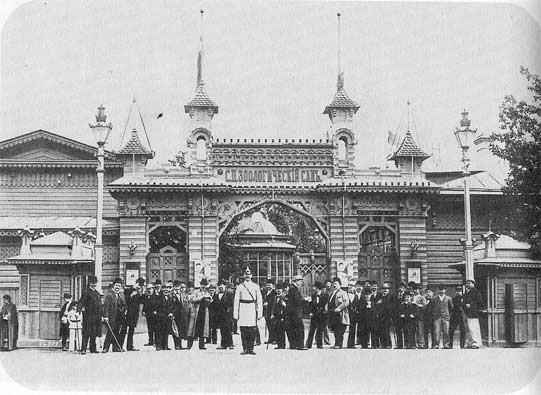
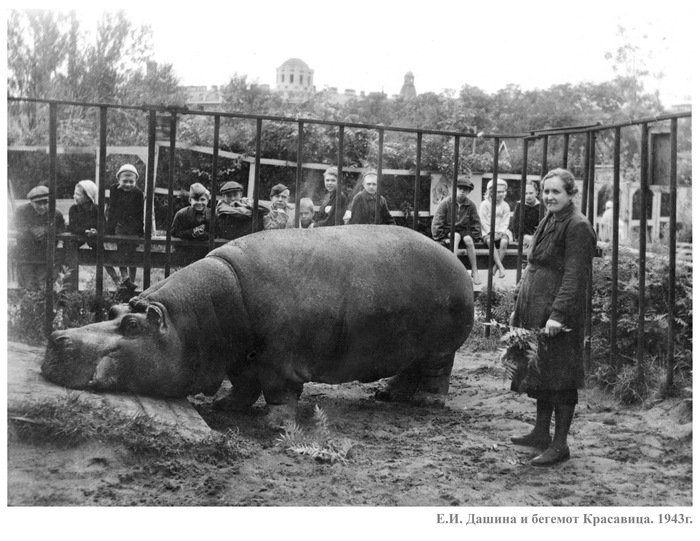
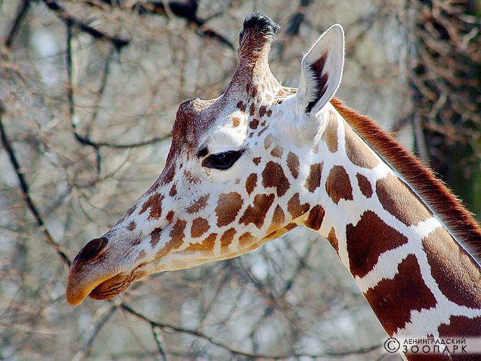
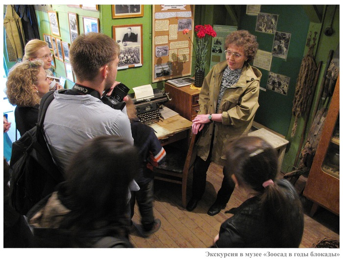

История зоопарка

Ленинградский зоопарк – один из старейших зоопарков России. На данный момент, сохраняя архитектурную планировку конца XIX века, зоопарк является частью архитектурного ансамбля города, а также хранителем его исторического наследия.
Зоопарк в Санкт-Петербурге был основан 1 августа (по старому стилю, 14 августа – по новому стилю) 1865 года. Изначально это был частный зверинец. Он был открыт и содержался на собственные средства голландцем прусского подданства Юлиусом Гебгардтом и его женой Софией. Впоследствии он сменил множество владельцев, более 50 лет оставаясь частным учреждением.
В государственное владение зоопарк попал лишь в 1917 году, когда после революции был издан «Декрет о национализации частных зрелищных предприятий». В 1918-1941 годы, после национализации зоосада для его управления был создан Ученый совет, в который вошли видные ученые того времени. В эти годы была создана научная библиотека, на базе зоопарка начали проводить исследовательскую работу, отправлять научные экспедиции. В этот период был основан Кружок Юных Зоологов (КЮЗ), который действует в Ленинградском зоопарке по сей день.
Вместе с городом Ленинградский зоопарк пережил самую страшную страницу его истории – Великую Отечественную войну и блокаду. Многие сотрудники зоопарка отправились на фронт, а значительная часть животных была эвакуирована в Казань. Но многие животные и сотрудники остались в городе. Работники зоопарка продолжали содержать животных и демонстрировать их посетителям.

За свою историю зоопарк закрывался для горожан лишь однажды – в страшную зиму 1941-42 гг., но уже весной 1942 года он был открыт. Около двух десятков человек, спасавших животных во время войны, многие из которых жили прямо в зоосаду, чтобы быть поближе к своим питомцам, совершили настоящий подвиг. Шестнадцать сотрудников зоосада были награждены медалью «За оборону Ленинграда». В память об их подвиге было решено не переименовывать зоопарк, а оставить его старое название – Ленинградский.
Справа от центрального входа в зоопарк располагается мемориальная табличка в память о тех страшных годах. А на территории зоопарка в здании «Бурого медвежатника», пережившем Великую Отечественную войну, - старейшем здании Ленинградского зоопарка на сегодняшний день, располагается музей «Зоосад в годы блокады». В этом музее Вы можете познакомиться с бытом сотрудников военных лет и подробно узнать о подвиге наших коллег в годы блокады.

В послевоенные годы зоопарк быстро восстанавливался. К 1951 его коллекция насчитывала более 150 видов животных. В Ленинградском зоопарке появились животные, ставшие, впоследствии родоначальниками целых династий. Так 9 августа 1956 года приехала пара жирафов – Мальчик и Джульетта, подаривших нашему зоопарку 12 потомков (это мировой рекорд). Последняя их внучка – Соня, до сих пор живет в нашем зоопарке.

В эти годы была заложена и добрая традиция Ленинградского зоопарка проводить тематические просветительные мероприятия для посетителей. С 1948 года организовывались Дни птиц, с конкурсами на создание лучшего скворечника и познавательными викторинами. С 1951 года к ним добавились и Новогодние праздники. Сегодня тематические мероприятия проводятся в зоопарке в среднем два раза в месяц, они посвящены разным памятным датам и животным в

В эти дни для посетителей проводятся бесплатные экскурсии, игротеки, викторины, показательные кормления животных. С анонсом мероприятий Вы можете ознакомиться здесь.
На сегодняшний день Ленинградский зоопарк остается уникальным музеем живой природы в Санкт-Петербурге, природоохранным и просветительным учреждением. Он продолжает неустанно развиваться, стараясь идти в ногу со временем, улучшая условия содержания животных, стремясь вывести их на европейский уровень, и повышая качество обслуживания своих посетителей. Подробнее об этом в разделе «Развитие».
К сожалению, архивная документация дореволюционной и даже довоенной давности в Зоопарке не сохранилась, так как в 1940 году по чьему-то указанию свыше архив Зоопарка был сожжен. Сейчас в Зоопарке собран исторический архив, неплохая фототека, большая коллекция слайдов, но основа ее была заложена сравнительно недавно, около 40 лет назад. Однако в городских архивах еще хранитсянемало материалов. Массу интересных подробностей можно почерпнуть из газетных и журнальных публикаций в собраниях Библиотеки Академии Наук и Публичной библиотеки. А в библиотеке Зоопарка сохранилось уникальное издание - «История Ленинградского зоологического сада».
Зоопарк приглашает всех, у кого сохранились фотографии, печатные материалы, просто воспоминания о довоенном и военном зоосаде, помочь в восстановлении его истории.
197198, Россия, Санкт-Петербург, Александровский парк, д. 1, ст. м. «Спортивная», «Горьковская» тел.: +7 (812) 232 8260; +7 (812) 230 1926
Ветклиника: +7 (812) 232 6983; факс: +7 (812) 232 8250